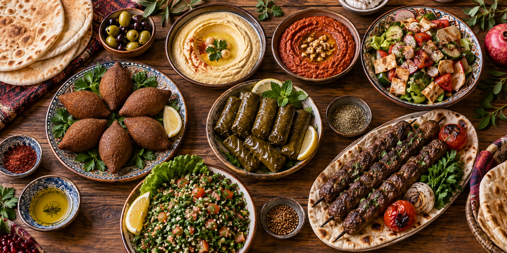

О нас
«Дамаск» — доставка настоящей сирийской кухни в Москве. Мы готовим по семейным рецептам и привозим свежие горячие блюда в любую точку города к назначенному времени.
Почему выбирают «Дамаск»
- Готовим традиционные сирийские блюда только из свежих продуктов
- Бережно упаковываем каждый заказ в удобные контейнеры бесплатно
- Доставляем горячие обеды ежедневно с 10:00 до 23:00
Топ-5 сирийских блюд
| № | Название | Кол-во заказов в неделю |
Цена |
|---|---|---|---|
| 1 | Киббе | 196 | 390₽ |
| 2 | Шиш-таук | 174 | 450₽ |
| 3 | Долма по-сирийски | 158 | 370₽ |
| 4 | Фаттуш | 143 | 310₽ |
| 5 | Хумус с питой | 129 | 290₽ |